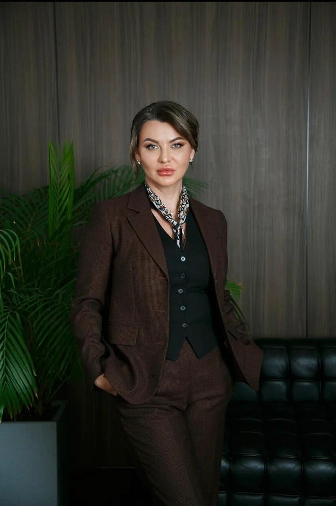

Адвокат по уголовным делам и сложным семейным спорам в Санкт-Петербурге
Работаю в Санкт-Петербурге и Ленинградской области, Великом Новгороде и Москве
Страховецкая Ева Рубиновна
Адвокатская палата Санкт-Петербурга, рег. № 78/5942
Опыт следственной и судебной работы в Санкт-Петербурге. Разбираю сложные юридические вопросы: уголовные дела, семейные споры с участием детей, раздел имущества супругов.
Консультация лично или онлайн — 5 000 ₽ / 2 ч
- 2014адвокат с 2014 года
- 17 летсудебной практики
- 285дел в открытых реестрах
Направления
-
Уголовные дела
- Наркотики ст. 228, 228.1 УК РФ
- Мошенничество, кража, растрата ст. 158–160 УК РФ
- Дропперы, финансовые курьеры ст. 159 УК РФ
- Грабёж и разбой ст. 161, 162 УК РФ
- Тяжкий вред здоровью ст. 111 УК РФ
- Подделка документов ст. 327 УК РФ
-
Семейные дела
Цены и подробности -
Другие дела
Цены и подробности
Уголовные дела
Защита по уголовным делам, в том числе по тяжким и особо тяжким составам.
-
Наркотики ст. 228, 228.1 УК РФ ПодробнееСвернуть
Защита по ст. 228 и 228.1 УК РФ (хранение, сбыт наркотиков), в том числе по вопросу переквалификации со сбыта на хранение, если для этого есть основания. Дела о культивировании и выращивании растений, содержащих наркотические вещества (с оценкой возможности административной, а не уголовной ответственности), о производстве в кустарных лабораториях (ч. 5 ст. 228.1 УК РФ) — с разбором химических экспертиз веса и вида вещества, о перевозке и контрабанде наркотиков и прекурсоров (ст. 228.3, 228.4, 229.1 УК РФ).
С этими составами работаю 12 лет. Выстраиваю защиту в том числе если вступаю в дело на поздней стадии. При наличии оснований заявляю о применении ст. 64 и ст. 73 УК РФ.
- Срочный выезд при задержании, допросе, рассмотрении в суде ходатайства следователя о мере пресечения
- Посещение в СИЗО и помощь после ареста: передачи, письма, связь с родственниками, разрешения на свидания и звонки
- Изучение материалов дела и оценка оснований для переквалификации со сбыта на хранение
- Проверка материалов оперативно-розыскных мероприятий: проверочной закупки, наблюдения, осмотра места происшествия, прослушивания телефонных переговоров
- Выявление нарушений при проведении следственных действий
- Выработка позиции с учётом личности и прежней деятельности обвиняемого
- Документирование работы: доверителю и родственникам — аудиозаписи открытых судебных заседаний, помощь со сбором характеристик
- Работа по договору с фиксированным размером вознаграждения
-
Мошенничество, кража, растрата ст. 158–160 УК РФ ПодробнееСвернуть
Защита по делам о краже (ст. 158 УК РФ), присвоении и растрате (ст. 160 УК РФ), в том числе по вопросу переквалификации на самоуправство (ст. 330 УК РФ), если для этого есть основания. Защита по делам о мошенничестве (ст. 159 УК РФ), в том числе когда спор по своей сути гражданско-правовой.
- Изучаю материалы дела и проверяю доказательства обвинения, в том числе договоры, на которых строится обвинение
- Проверяю расчёт суммы ущерба, при необходимости привлекаю специалистов в области экономики и бухгалтерского учёта
- Заявляю ходатайства об изменении меры пресечения — на домашний арест, запрет определённых действий (ст. 105.1 УПК РФ) или залог
- Работаю по договору
-
Дропперы, финансовые курьеры ст. 159 УК РФ ПодробнееСвернуть
Защита молодых людей, в том числе несовершеннолетних, которых привлекают к ответственности как дропперов или курьеров: они передали свои банковские карты или счета либо перевозили деньги по просьбе мошенников и сами оказались втянуты в их схему.
- При наличии оснований ходатайствую о назначении судебной психолого-психиатрической экспертизы — с вопросами, важными для оценки умысла
- Добиваюсь проверки того, как мошенники использовали подзащитного, — вплоть до возбуждения отдельного дела, где он признаётся потерпевшим, если для этого есть основания
- Работаю по договору, размер вознаграждения фиксирован, возможна рассрочка
-
Грабёж и разбой ст. 161, 162 УК РФ ПодробнееСвернуть
Защита по делам о грабеже (ст. 161 УК РФ), в том числе по вопросу переквалификации на кражу или на ч. 1 ст. 161 УК РФ и примирения с потерпевшим, если для этого есть основания. Защита по делам о разбое (ст. 162 УК РФ), в том числе по вопросу переквалификации на ст. 161 УК РФ и учёта смягчающих обстоятельств, включая ст. 64 УК РФ.
- Выезжаю при задержании в следственный орган и в СИЗО, в экстренных случаях — в любое время суток
- Проверяю и оспариваю доказательства обвинения
- Заявляю ходатайства об изменении меры пресечения
- Документирую каждый этап работы
- Фиксирую размер вознаграждения в соглашении, возможна рассрочка
-
Тяжкий вред здоровью ст. 111 УК РФ ПодробнееСвернуть
Защищаю по делам о причинении тяжкого вреда здоровью (ст. 111 УК РФ). Провожу собственное расследование и оспариваю доказательства.
- Экстренный выезд — в любое время суток
- Выезжаю в СИЗО и ИК
- Заявляю ходатайства об изменении меры пресечения
- Документирую каждый этап процесса
-
Подделка документов ст. 327 УК РФ ПодробнееСвернуть
Защищаю по делам о подделке документов (ст. 327 УК РФ).
- Изучаю материалы дела и проверяю доказательства обвинения
- Провожу собственное расследование
- Выезжаю в СИЗО и ИК
- Работаю по договору
- Также: убийство (ст. 105), похищение человека (ст. 126), другие тяжкие и особо тяжкие составы
Семейные дела
Веду гражданские дела и семейные споры повышенной сложности. Возможны онлайн-консультации и выезд к клиенту.
-
Раздел имущества ПодробнееСвернуть
Веду дела о разделе имущества, в том числе в семейных спорах повышенной сложности.
- Консультирую устно и письменно
- Проверяю и составляю договоры
- Веду досудебное урегулирование
- Представляю интересы в суде
-
Развод ПодробнееСвернуть
Веду дела о заключении и расторжении брака, в том числе семейные споры повышенной сложности. Возможны онлайн-консультации и выезд к клиенту.
- Консультирую устно и письменно
- Составляю исковые заявления
- Веду досудебное урегулирование
- Представляю интересы в суде
-
Алименты ПодробнееСвернуть
Веду дела об алиментах — в рамках семейных споров, в том числе повышенной сложности. Работаю по договору.
- Консультирую устно и письменно
- Составляю претензии и исковые заявления
- Веду досудебное урегулирование
- Представляю интересы в суде
-
Опека, усыновление, родительские права ПодробнееСвернуть
Веду дела об усыновлении, опеке, попечительстве и родительских правах. Возможен выезд к клиенту.
- Консультирую устно и письменно
- Составляю исковые заявления
- Веду досудебное урегулирование
- Представляю интересы в суде
Другие дела
Административные дела, военное право и защита прав потребителей. Работаю по договору, возможны онлайн-консультации и выезд к клиенту.
-
Административные дела ПодробнееСвернуть
Веду административные дела. Работаю по договору; возможны онлайн-консультации и выезд к клиенту.
- Консультирую устно и письменно
- Изучаю материалы дела
- Представляю интересы в суде
-
Военное право ПодробнееСвернуть
Консультирую и веду дела по военному праву. Работаю по договору.
- Консультирую устно и письменно
- Составляю претензии и исковые заявления
- Представляю интересы в суде
-
Защита прав потребителей ПодробнееСвернуть
Веду дела о защите прав потребителей. Возможны онлайн-консультации и выезд к клиенту.
- Проверяю и анализирую договоры
- Составляю претензии и исковые заявления
- Веду досудебное урегулирование
- Представляю интересы в суде
Практика
- 2014 адвокат с 2014 года
- 17+ лет практики
Опыт в семейных делах
- Взыскание алиментов, изменение их размера с долевого на твёрдую сумму
- Дела о лишении родительских прав
- Раздел имущества супругов, в том числе квартир в ипотеке, недвижимости и бизнеса
- Правовая защита женщин от семейного насилия
285 дел
из них уголовных — 230+
- Уголовные 230+
- Другие
По данным открытых судебных реестров.
- Юрист с 2009 года, адвокат с 2014 года
- Адвокатский кабинет «Страховецкая Е. Р.»
- Адвокатская палата Санкт-Петербурга, рег. № 78/5942, удостоверение № 8928
Об адвокате
Найти своего адвоката — это решение, определяющее судьбу и свободу человека
Если адвокат нужен срочно или у вас уже есть юрист, но нужен взгляд со стороны, — приглашаю на персональную консультацию. Разберём ваш вопрос и определим порядок действий по уголовному делу, спору о детях или разделу имущества.
Основная специализация — защита по ст. 228 и 228.1 УК РФ (хранение и сбыт наркотиков), в том числе по делам о культивировании и выращивании растений, о производстве в кустарных лабораториях (ч. 5 ст. 228.1 УК РФ), о перевозке и контрабанде наркотиков и прекурсоров (ст. 228.3, 228.4, 229.1 УК РФ).
Также веду дела о хулиганстве (ст. 213 УК РФ), преступлениях против личности (ст. 105, 108, 109, 111, 112, 114, 116, 119, 126 УК РФ), кражах (ст. 158 УК РФ), мошенничестве, в том числе дела курьеров и дропперов (ст. 159 УК РФ), грабеже (ст. 161 УК РФ), разбое (ст. 162 УК РФ), присвоении и растрате, должностных преступлениях (ст. 160, 285, 290 УК РФ), нарушении правил дорожного движения (ст. 264 УК РФ).
Защищаю на следствии, в суде первой инстанции, в апелляции и кассации. При необходимости ходатайствую о назначении экспертиз и привлекаю профильных специалистов.
Более 17 лет практики в уголовном, гражданском и административном праве. Работаю чётко и последовательно, с вниманием к деталям и жизненной ситуации доверителя. Быстро оцениваю ситуацию по делу и риски для доверителя, о которых честно предупреждаю.
Отзывы доверителей — на Яндекс Картах (откроется в новой вкладке), HARANT (откроется в новой вкладке) и Zoon (откроется в новой вкладке).
Образование и квалификация
Стоимость и условия
- Консультация по телефону
- бесплатно
- Консультация лично или онлайн
- 5 000 ₽ / 2 ч
- Жалоба, ходатайство, исковое заявление
- от 7 000 ₽
- Ведение уголовного дела
- от 80 000 ₽ за стадию
- Экстренный выезд 24/7 при задержании, обыске, неотложном допросе подозреваемого или свидетеля (за пределами Санкт-Петербурга — плюс транспортные расходы)
- 25 000 ₽
- Участие в суде при избрании меры пресечения
- от 50 000 ₽
- Защита на следствии или в суде
- по договорённости, в зависимости от объёма обвинения и сложности дела
- Защита в апелляционной и кассационной инстанциях
- от 100 000 ₽
- УДО, замена или отсрочка отбывания наказания (ст. 80, 82 УК РФ) (обсуждается на консультации)
- от 50 000 ₽
Условия оплаты
Наличные или банковский перевод.
Работа по письменному соглашению.
Размер вознаграждения фиксируется в соглашении: без «гонораров успеха», почасовой и посуточной оплаты, без доплат по ходу работы.
Возможна поэтапная оплата.
Скидки при повторном обращении и по рекомендации знакомых.
Как начать работу
-
Шаг 1
Позвоните или напишите — отвечаю лично.
-
Шаг 2
Договоримся о времени личной или онлайн-встречи.
-
Шаг 3
На первой встрече обсудим план действий и стоимость.
Проверить адвоката
Контакты
- Адрес
- Санкт-Петербург, Московский пр., д. 186, офис 18
- Метро
- «Парк Победы» — 700 м, «Электросила» — 800 м
- Телефон
- +7 (911) 258-59-34
- Почта
- strahovets@yandex.ru
- ВКонтакте
- vk.ru/id124027365
- Часы работы
- Ежедневно 10:00–22:00, экстренно — круглосуточно
Работаю также в Ленинградской области, Великом Новгороде и Москве.